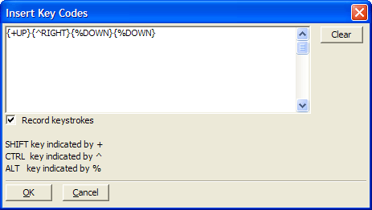

Insert Key Codes
Syntax
Clicking Code > More Genies > Insert Key Code when in the Code Editor displays the Insert Key Codes dialog box. This utility generates the code sequences needed to represent control keystrokes on the keyboard.

See Also
SYS_SEND_KEYS(), OnKey Events on Forms